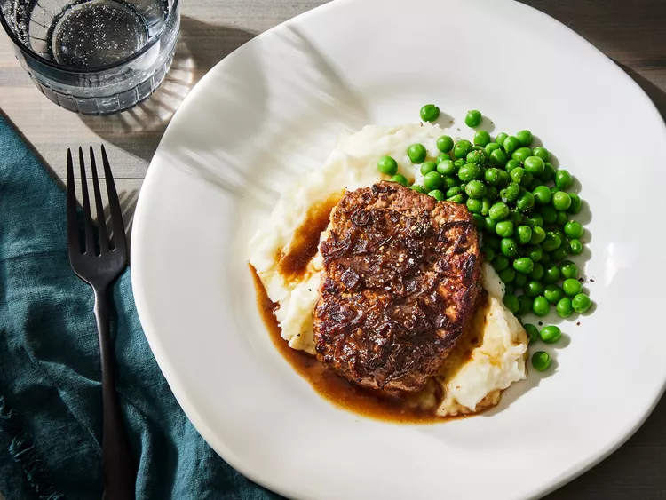
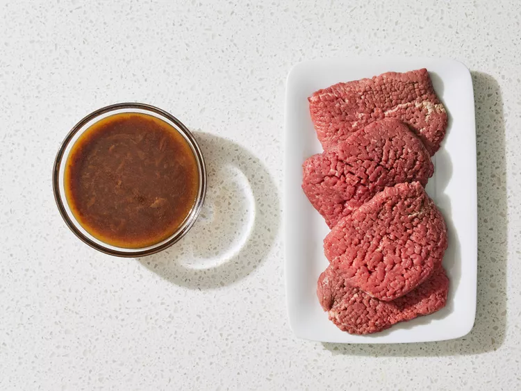
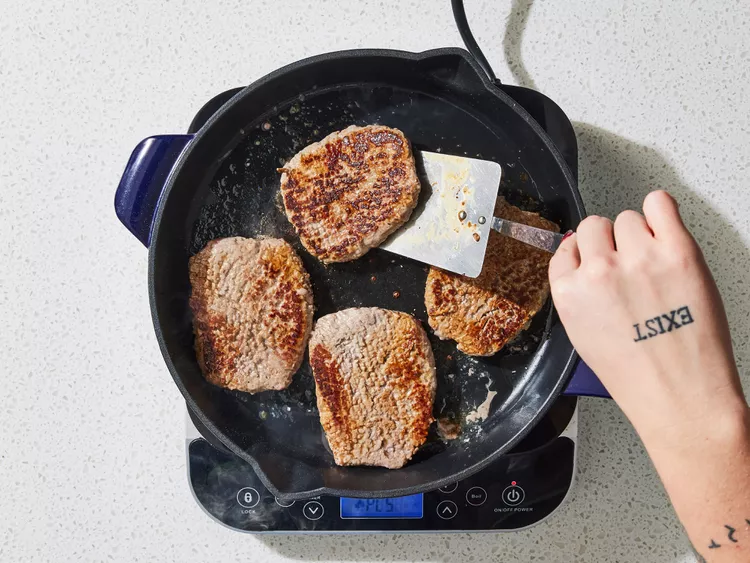
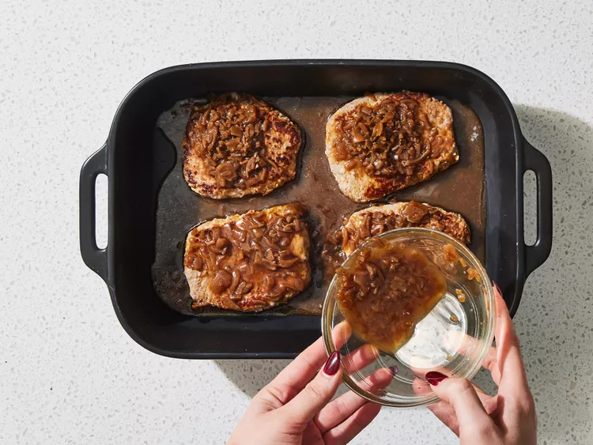
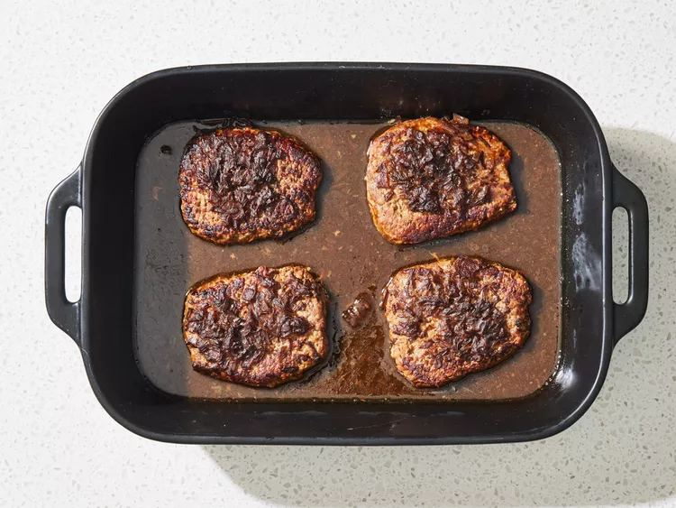

Steak Recipes

This minute steak recipe is so easy. I serve it with mashed potatoes and warm rolls.
ingredients
- 4 (1/2 pound) cube steaks (pounded round meat)
- 1 (10.5 ounce) can condensed French onion soup
Steps
- Gather all ingredients. Preheat the oven to 350 degrees F (175 degrees C).

- Sear steaks in a large skillet over medium heat, 2 to 4 minutes per side.

- Transfer steaks to a 9x13-inch baking dish. Pour condensed soup over top.

- Bake in the preheated oven until tender and slightly pink in the center, about 1 hour. An instant-read thermometer inserted into the center should read 140 degrees F (60 degrees C) for medium doneness.

Back to Home